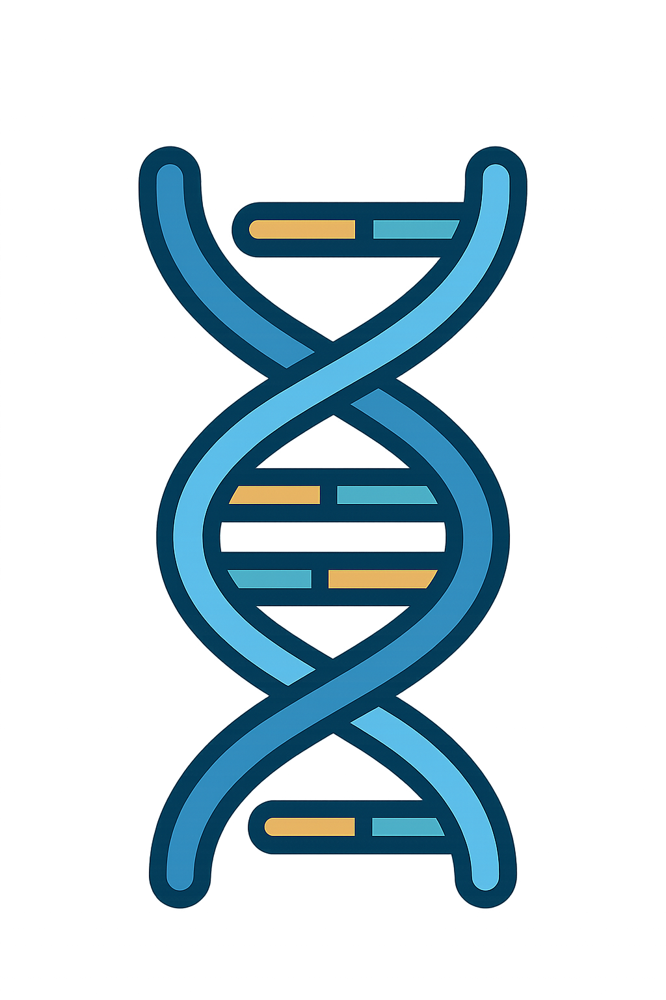
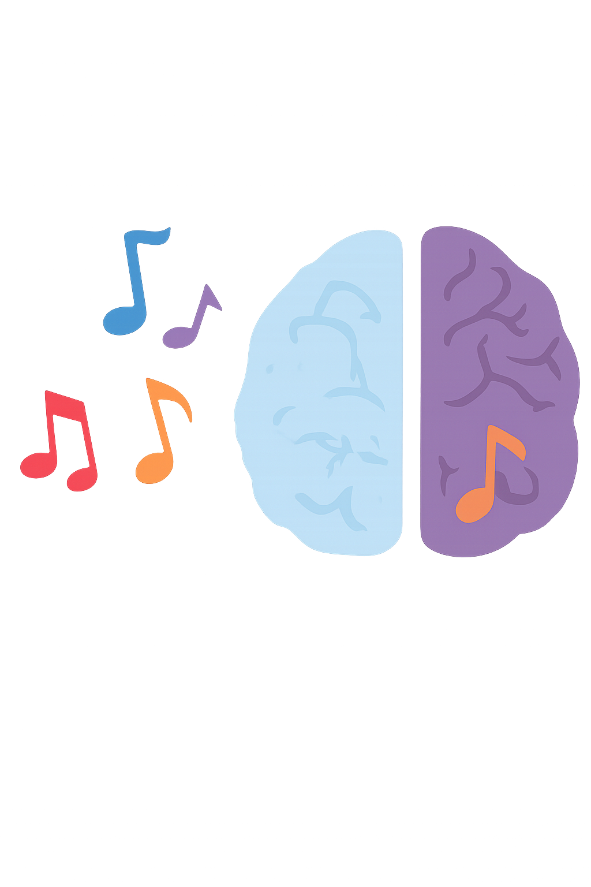
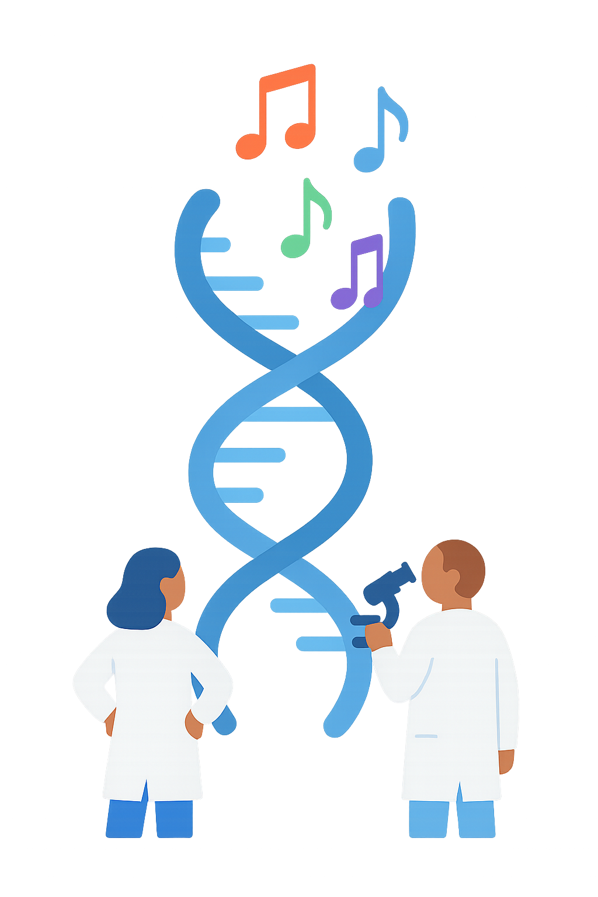
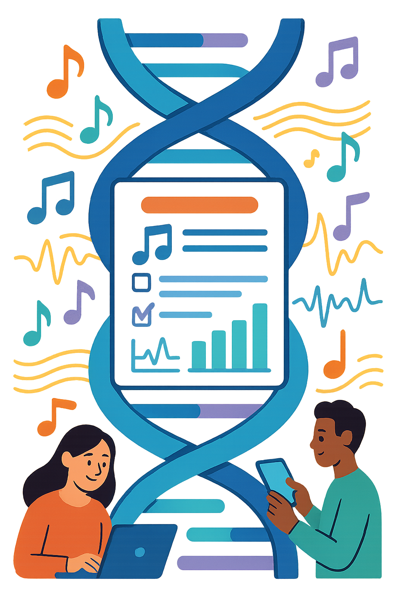

El gen de la música
¿Nacemos o aprendemos a ser musicales?
La música parece algo que aprendemos, pero ¿y si parte de nuestra habilidad para reconocer el ritmo o el tono estuviera escrita en nuestros genes?
En esta web exploramos que dice la biología sobre el talento musical y la herencia del oído absoluto.


Los genes establecen las bases de nuestras capacidades musicales. Investigaciones demuestran que entre el 40% y el 70% de la capacidad musical tiene un componente genético. Nuestro ADN determina características como la sensibilidad auditiva, la memoria para tonos y la coordinación neuromuscular que son fundamentales para la musicalidad.
El talento musical es una combinación entre naturaleza y crianza. Nacemos con predisposiciones genéticas que nos hacen más o menos sensibles a ciertos aspectos de la música.

La epigenética es la ciencia de cómo el ambiente y la experiencia pueden activar o desactivar genes sin cambiar el ADN.
Cuando practicamos música, el cerebro genera cambios epigenéticos que refuerzan las conexiones neuronales relacionadas con la audición y el movimiento. La práctica musical es un "interruptor" que enciende nuestro potencial genético.


Científicos han convertido secuencias de ADN en música, asignando notas a bases genéticas (A, T, G, C).
Este fascinante proyecto revela que el ADN humano, cuando se traduce a sonido, posee patrones melódicos y rítmicos. Cada persona tiene un "ADN melódico" único que refleja su composición genética en forma de música.

Descubre tu perfil musical único completando nuestro cuestionario interactivo.
A través de preguntas sobre tus preferencias musicales y experiencias con la música, generaremos un análisis personalizado que te mostrará cómo tus características genéticas y epigenéticas pueden influir en tu relación con la música.